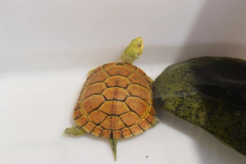

Choosing the Right Turtle
Selecting the right type of turtle is crucial for both the health of the turtle and the ease of care it requires. Consider factors such as the turtle's adult size, lifespan, and habitat needs.
Basic Care
Basic care for turtles includes providing a suitable living environment, proper diet, and regular health checks. Learn the essentials to ensure your turtle thrives.